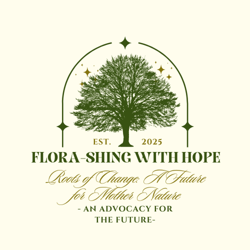

Then, I realized that lands like this, once full of nature and biodiversity, can be taken down by human activities or issues that may have stemmed from them. I realized that all of these unique flora, each with its own beauty and purpose, may not last long enough for other generations to see as well. Not only that, but the loss of these plants can greatly affect our planet and ecosystems in the long run. Thus, I conducted further research and found more people, even students like me, who would want to participate in solving this problem. We would plan what activities to do and where to hold them. We all collectively agreed that our planet's biodiversity needs to be saved. We may not be able to do it through big or global solutions, but we can start small by focusing on plant biodiversity, which has affected our everyday lives for a long time now.
